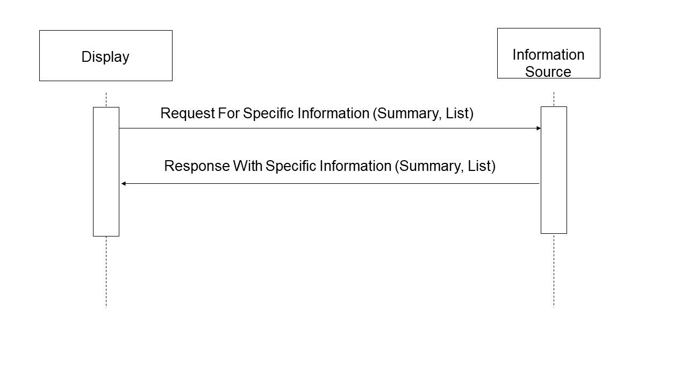

3.13 Follow Context [ITI-13]
This section corresponds to transaction [ITI-13] of the IHE IT Infrastructure Technical Framework. Transaction [ITI-13] is used by the Patient Context Participant, User Context Participant and Context Manager Actors.
3.13.1 Scope
This transaction allows the Context Manager to force other context participant actors to synchronize based on the new context values.
This transaction is composed of multiple methods as defined by the HL7 Context Management “CCOW” Standard . It has multiple phases consisting of surveying the participants, indication to them of final decision as to whether the context changed or not, and retrieval of the new context values by the context participants.
Each of the context participant actors follows a specific subject. The Patient Context Participant follows the patient subject and does not expect the user subject to be set in context. The User Context Participant follows the user subject.
The semantics of the methods used are defined in the documents HL7 Context Management “CCOW” Standard: Component Technology Mapping: ActiveX or HL7 Context Management “CCOW” Standard: Component Technology Mapping: Web , in conjunction with the HL7 Context Management “CCOW” Standard: Subject Data Definitions document. A Context Participant can implement either technology. The Context Manager shall support both technologies in order to interoperate with joining participants implementing the technology of their choice.
3.13.2 Use Case Roles
Actor: Patient Context Participant
Role: Responds to context survey. Synchronizes display to new value(s) in the patient subject of a context it follows.
Actor: User Context Participant
Role: Responds to context survey. Synchronizes display to new value(s) in the patient subject of a context it follows.
Actor: Context Manager
Role: Conducts context survey, notifies the context participants of acceptance or cancellation of a change, and provides context values.
3.13.3 Referenced Standard
HL7 Context Management “CCOW” Standard, Version 1.4
Technology and Subject Independent Architecture
Component Technology Mapping: ActiveX
Component Technology Mapping: Web
Subject Data Definitions
3.13.4 Messages
Figure 3.13-1: Follow Context – ContextChangesPending Method Sequence
3.13.4.1 Follow Context – ContextChangesPending Method
The ContextChangesPending method is invoked by the Context Manager to survey context participant actors with regard to acceptability of changes proposed by a Patient Context Participant or Client Authentication Agent Actors.
3.13.4.1.1 Trigger Events
The ContextChangesPending method is triggered when the Context Manager receives invocation of the EndContextChanges method.
3.13.4.1.2 Message Semantics
ContextChangesPending is defined as a method on the ContextParticipant interface and allows the Context Manager to survey a context participant as to whether or not it is ready to follow the changes in the context.
In the invocation of this method, the Context Manager shall provide the pending context’s coupon.
Refer to the HL7 Context Management “CCOW” Standard: Technology and Subject-Independent Architecture document, Section 17.3.7.2, for a description of the parameters associated with this method.
3.13.4.1.3 Expected Actions
Performing the ContextChangesPending method, the Patient Context Participant or User Context Participant makes a decision whether or not it can accept change of context (for example due to operation being in progress). To reach this decision, it may invoke the GetItemValues method to inspect proposed new values in the context.
As a response, a Context Participant will respond with an indication to Accept or Conditionally Accept the proposed change. Refer to the HL7 Context Management “CCOW” Standard: Technology and Subject-Independent Architecture document, Section 17.3.7.2, for the specifics of the response formation.
3.13.4.2 Follow Context – ContextChangesAccepted Method
The ContextChangesAccepted method is invoked by the Context Manager to confirm to the context participants that instigator of change accepted proposed changes.
3.13.4.2.1 Trigger Events
The ContextChangesAccepted method is triggered when the Context Manager receives invocation of the PublishChangesDecision method indicating that the changes have been accepted.
3.13.4.2.2 Message Semantics
ContextChangesAccepted is defined as a method on the ContextParticipant interface and allows the Context Manager to inform a context participant that the context value(s) have been changed.
In the invocation of this method, the Context Manager provides the new context coupon.
Refer to the HL7 Context Management “CCOW” Standard: Technology and Subject-Independent Architecture , Section 17.3.7.3 for a description of the parameters associated with this method.
3.13.4.2.3 Expected Actions
Performing the ContextChangesAccepted method, the Patient Context Participant or User Context Participant accepts new context and can subsequently retrieve new values using the GetItemValues method.
It responds with confirmation of success or an exception. Refer to the HL7 Context Management “CCOW” Standard: Technology and Subject-Independent Architecture document, Section 17.3.7.3, for the specifics of the response formation.
3.13.4.3 Follow Context – ContextChangesCancelled Method
The ContextChangesCancelled method is invoked by the Context Manager to inform the context participants that instigator of change cancelled proposed changes.
3.13.4.3.1 Trigger Events
The ContextChangesCancelled method is triggered when the Context Manager receives invocation of the PublishChangesDecision method indicating that the changes have been cancelled.
3.13.4.3.2 Message Semantics
ContextChangesCancelled is defined as a method on the ContextParticipant interface and allows the Context Manager to inform a context participant that the pending context change has been cancelled.
In the invocation of this method, the Context Manager provides the pending context’s coupon.
Refer to the HL7 Context Management “CCOW” Standard: Technology and Subject-Independent Architecture , Section 17.3.7.4 for a description of the parameters associated with this method.
3.13.4.3.3 Expected Actions
Performing the ContextChangesCancelled method, the Patient Context Participant or User Context Participant keeps its current context and destroys information about a pending context change that has been cancelled.
It responds with confirmation of success or an exception. Refer to the HL7 Context Management “CCOW” Standard: Technology and Subject-Independent Architecture document, Section 17.3.7.4, for the specifics of the response formation.
3.13.4.4 Follow Context – GetItemValues Method
The GetItemValues method is invoked by a Context Participant to retrieve value(s) from the context it follows.
3.13.4.4.1 Trigger Events
The GetItemValues method is triggered by a Context Participant after it receives the context coupon as a result of the ContextChangesPending, ContextChangesAccepted or GetContextCoupon methods.
3.13.4.4.2 Message Semantics
GetItemValues is defined as a method on the ContextData or SecureContextData interface. If the context is not secured when a participant actor has joined the context (i.e., Patient Context Participant that only follows patient context), then this method should be invoked on the ContextData interface. Otherwise, it shall be invoked on the SecureContextData interface.
By invocation of this method without specification of the list of item names, a context participant retrieves values of all items presently set in context. It can also first invoke the GetItemNames method on the same interface (as specified in CCOW Standard) and use the list of items for selective retrieval of item values from the context via GetItemValues method. The Patient Context Participant needs to search through the resulting list of Patient.Id.IdList.<n> values until a recognized Patient Domain is found. The Patient Context Participant may choose to be grouped with a PIX Patient Identifier Cross-reference Consumer to handle the cases where no known Patient Domain is found in the resulting IdList.
Refer to the HL7 Context Management “CCOW” Standard: Technology and Subject-Independent Architecture document , Section 17.3.4.5, for the Patient Context Participant Actor, and Section 17.3.13.2, for the User Context Participant, for a description of parameters associated with this method.
3.13.4.4.3 Expected Actions
Context Manager shall return the values of requested items or an exception. Refer to the HL7 Context Management “CCOW” Standard: Technology and Subject-Independent Architecture document , Section 17.3.4.5, for the Patient Context Participant Actor, and Section 17.3.13.2, for the User Context Participant, for a description of the response issued by the Context Manager Actor.